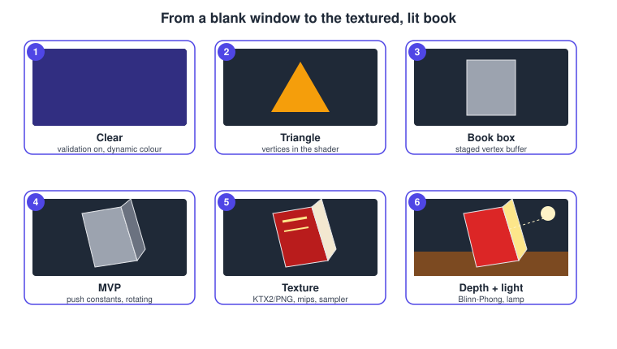
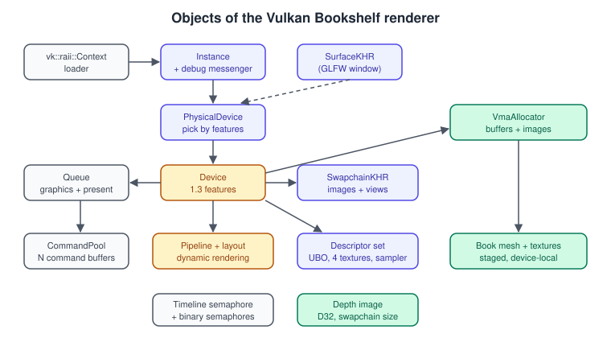
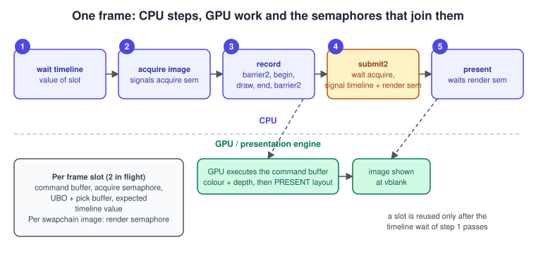
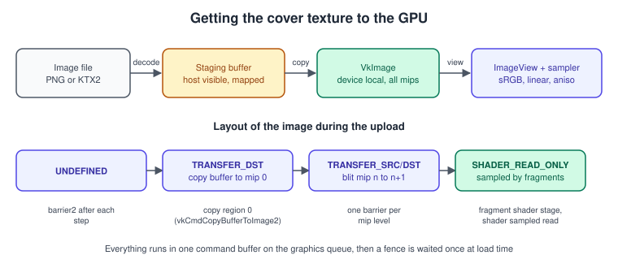
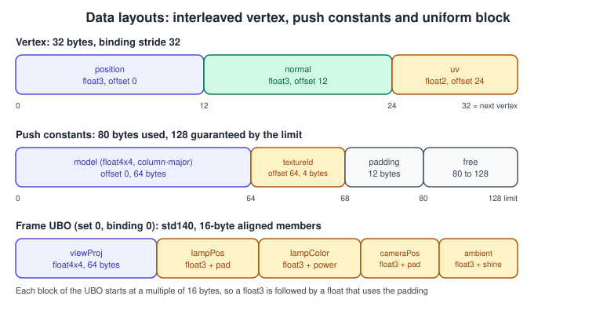
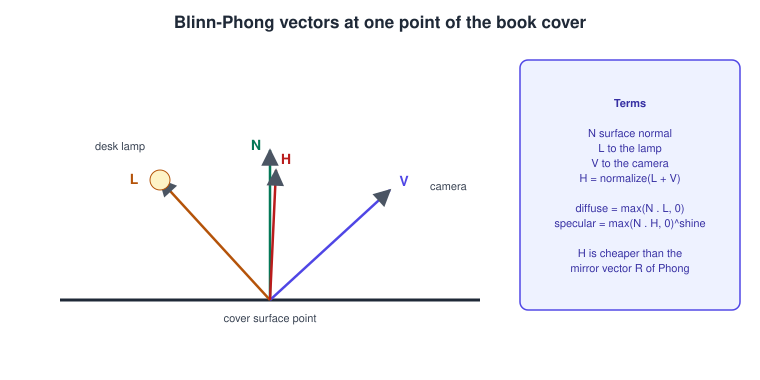

Bookshelf 1: From a Triangle to the Textured Book
|
This content was generated with the assistance of AI and should be verified against the official documentation before being relied on in production. |
Vulkan gives no defaults. There is no current context, no default framebuffer, no implicit synchronization and no shader compiler in the driver: you create every object, describe every pipeline, record every command and say when each piece of work may start. The reward is that nothing happens behind your back, so a program that is correct is also predictable. This page walks that road once, with the smallest steps that still teach something, and ends with the first picture of the Bookshelf: a textured, lit, rotating book standing on a wooden board.
The facts were checked in November 2026. The versions documented are Vulkan 1.4 (headers 1.4.3xx, the LunarG SDK 1.4.363.0) with the running example requiring only Vulkan 1.3, which gives dynamic rendering, synchronization2 and timeline semaphores as core features; optional 1.4 and Roadmap 2026 features appear on the second page of the example. The code targets Windows, Linux and macOS (through the SDK’s portability support, see Vulkan on Apple) with a GPU and driver that report Vulkan 1.3. Install the SDK and the toolchain first, as described in Setup: SDK and Toolchain.
This is the first of two running-example pages. It is Vulkan Bookshelf steps 1 to 5 of the shared plan: an instance with validation, a clear, a triangle with dynamic rendering and sync2, the book box with a VMA-staged vertex buffer, MVP by push constants and a uniform buffer, a cover texture, depth and light. The project uses C++20, the RAII layer of Vulkan-Hpp, the Vulkan Memory Allocator (VMA), GLFW for the window and Slang for the shaders, with the same shader shown as GLSL and HLSL alternatives where it matters. The second page, Bookshelf 2: Scene and Game, adds many objects, ray-query picking and the game loop. The concepts are explained in depth on the topic pages linked along the way, and in the general pages The Rendering Pipeline and Explicit vs Implicit APIs. The same scene is built with other APIs in OpenGL: Hello Triangle, Metal: Hello Triangle and WebGL 2: First Triangle.
The shared assets are the glTF 2.0 model bookshelf.glb and the four texture images
(bookshelf-wood.png, bookshelf-cover.png, bookshelf-spine.png and bookshelf-pages.png) kept in the site’s attachments. The textures ship
as PNG files. KTX2 versions are produced by the reader with toktx or with ktx create of the KTX-Software tools, as
shown in the texture section below; the page code loads PNG so that it runs without those tools, and the KTX2 path changes
only the loader.
What you will see

| Stage | What is new | Main Vulkan objects |
|---|---|---|
1. Clear |
A window that shows a colour, with validation on |
Instance, debug messenger, surface, device, swapchain, command buffers, timeline semaphore |
2. Triangle |
Three vertices produced by the vertex shader |
Shader modules, pipeline layout, graphics pipeline, |
3. Book box |
Real geometry in a device-local vertex and index buffer |
VMA, staging buffer, |
4. MVP |
Model, view and projection, the box turns |
Push constants, uniform buffer, descriptor set |
5. Texture |
Cover, spine, pages and wood images with mipmaps |
Image, image view, sampler, |
6. Depth and light |
Hidden surfaces and the desk lamp |
Depth image, depth attachment, Blinn-Phong fragment shader |
The objects the program builds

Every box in the figure is a Vulkan-Hpp RAII object or a VMA allocation. Their destruction order is the reverse of creation, and the RAII classes enforce most of it by holding references to their parents. One rule of thumb prevents most crashes at exit: declare the members of the renderer class in creation order (context, instance, messenger, surface, physical device, device, queue, allocator, swapchain, frame data), so that C++ destroys them in the opposite order. The topics behind each object are: the instance and loader, devices and queues, surface and swapchain, command buffers, memory and VMA.
Project and build
The CMake project below fetches GLFW, GLM and VMA, finds the Vulkan SDK and compiles the Slang shaders to SPIR-V at
build time. slangc is part of the SDK; see Shaders, SPIR-V and Shading Languages
for the other compilers. The same CMake concepts are explained in
C++ build and tooling.
cmake_minimum_required(VERSION 3.24)
project(VulkanBookshelf LANGUAGES CXX)
set(CMAKE_CXX_STANDARD 20)
set(CMAKE_CXX_STANDARD_REQUIRED ON)
find_package(Vulkan 1.3 REQUIRED)
find_program(SLANGC slangc HINTS "$ENV{VULKAN_SDK}/bin" "$ENV{VULKAN_SDK}/Bin")
include(FetchContent)
FetchContent_Declare(glfw GIT_REPOSITORY https://github.com/glfw/glfw.git GIT_TAG 3.4)
FetchContent_Declare(glm GIT_REPOSITORY https://github.com/g-truc/glm.git GIT_TAG 1.0.1)
FetchContent_Declare(vma GIT_REPOSITORY https://github.com/GPUOpen-LibrariesAndSDKs/VulkanMemoryAllocator.git
GIT_TAG v3.5.0)
set(GLFW_BUILD_DOCS OFF CACHE BOOL "" FORCE)
set(GLFW_BUILD_TESTS OFF CACHE BOOL "" FORCE)
set(GLFW_BUILD_EXAMPLES OFF CACHE BOOL "" FORCE)
FetchContent_MakeAvailable(glfw glm vma)
add_executable(bookshelf src/main.cpp src/vma_impl.cpp)
target_link_libraries(bookshelf PRIVATE Vulkan::Vulkan glfw glm::glm GPUOpen::VulkanMemoryAllocator)
target_compile_definitions(bookshelf PRIVATE
VULKAN_HPP_NO_CONSTRUCTORS GLM_FORCE_RADIANS GLM_FORCE_DEPTH_ZERO_TO_ONE)
# One SPIR-V module per Slang file; entry names are kept (vertMain, fragMain).
foreach(shader triangle bookshelf)
add_custom_command(
OUTPUT ${CMAKE_BINARY_DIR}/${shader}.spv
COMMAND ${SLANGC} ${CMAKE_SOURCE_DIR}/shaders/${shader}.slang
-target spirv -profile spirv_1_4 -emit-spirv-directly -fvk-use-entrypoint-name
-matrix-layout-column-major
-o ${CMAKE_BINARY_DIR}/${shader}.spv
DEPENDS ${CMAKE_SOURCE_DIR}/shaders/${shader}.slang)
target_sources(bookshelf PRIVATE ${CMAKE_BINARY_DIR}/${shader}.spv)
endforeach()src/vma_impl.cpp contains only the implementation switch of the single-header library:
#define VMA_IMPLEMENTATION
#include <vulkan/vulkan.h>
#include <vk_mem_alloc.h>Source: Vulkan Tutorial (Khronos) and VMA documentation
The flag -matrix-layout-column-major is set on purpose. GLM stores matrices column by column, and Slang’s
mul(matrix, vector) follows the HLSL convention; stating the layout on the command line means the answer does not
depend on a default. If you prefer GLSL, glslc shader.vert -o shader.vert.spv compiles the same logic with
layout(column_major) as the default for uniform blocks; for HLSL use dxc -spirv -T vs_6_0 -E vertMain.
Step 1: instance, validation, surface and device
The first code of every Vulkan program creates the instance and, while developing, turns on the Khronos validation layer with a debug messenger. The layer and the messenger are explained in Validation and Debug Utils, and the loader that finds them in Instance, Loader and Layers.
#define VULKAN_HPP_NO_CONSTRUCTORS
#define VULKAN_HPP_HANDLE_ERROR_OUT_OF_DATE_AS_SUCCESS
#include <vulkan/vulkan_raii.hpp>
#include <GLFW/glfw3.h>
#include <vk_mem_alloc.h>
#include <algorithm>
#include <array>
#include <cstdint>
#include <iostream>
#include <span>
#include <stdexcept>
#include <vector>
static VKAPI_ATTR vk::Bool32 VKAPI_CALL debugCallback(
vk::DebugUtilsMessageSeverityFlagBitsEXT severity, vk::DebugUtilsMessageTypeFlagsEXT,
const vk::DebugUtilsMessengerCallbackDataEXT* data, void*) {
if (severity >= vk::DebugUtilsMessageSeverityFlagBitsEXT::eWarning) {
std::cerr << "[vulkan] " << data->pMessage << '\n';
}
return vk::False;
}
vk::raii::Instance makeInstance(vk::raii::Context& context, bool validation) {
vk::ApplicationInfo app{
.pApplicationName = "Vulkan Bookshelf",
.applicationVersion = VK_MAKE_API_VERSION(0, 1, 0, 0),
.pEngineName = "none",
.engineVersion = VK_MAKE_API_VERSION(0, 1, 0, 0),
.apiVersion = VK_API_VERSION_1_3};
std::vector<const char*> extensions;
uint32_t glfwCount = 0;
const char** glfwExt = glfwGetRequiredInstanceExtensions(&glfwCount);
extensions.assign(glfwExt, glfwExt + glfwCount);
vk::InstanceCreateFlags flags{};
// The macOS loader only lists portability drivers (MoltenVK, KosmicKrisp) when asked to.
for (auto& e : context.enumerateInstanceExtensionProperties()) {
if (std::string_view(e.extensionName) == VK_KHR_PORTABILITY_ENUMERATION_EXTENSION_NAME) {
extensions.push_back(VK_KHR_PORTABILITY_ENUMERATION_EXTENSION_NAME);
flags |= vk::InstanceCreateFlagBits::eEnumeratePortabilityKHR;
}
}
std::vector<const char*> layers;
if (validation) {
layers.push_back("VK_LAYER_KHRONOS_validation");
extensions.push_back(VK_EXT_DEBUG_UTILS_EXTENSION_NAME);
}
vk::InstanceCreateInfo info{
.flags = flags,
.pApplicationInfo = &app,
.enabledLayerCount = static_cast<uint32_t>(layers.size()),
.ppEnabledLayerNames = layers.data(),
.enabledExtensionCount = static_cast<uint32_t>(extensions.size()),
.ppEnabledExtensionNames = extensions.data()};
return vk::raii::Instance(context, info);
}
vk::raii::DebugUtilsMessengerEXT makeMessenger(vk::raii::Instance& instance) {
using Sev = vk::DebugUtilsMessageSeverityFlagBitsEXT;
using Typ = vk::DebugUtilsMessageTypeFlagBitsEXT;
vk::DebugUtilsMessengerCreateInfoEXT info{
.messageSeverity = Sev::eVerbose | Sev::eInfo | Sev::eWarning | Sev::eError,
.messageType = Typ::eGeneral | Typ::eValidation | Typ::ePerformance,
.pfnUserCallback = &debugCallback};
return vk::raii::DebugUtilsMessengerEXT(instance, info);
}The choices in makeInstance, and what each does:
| Setting | Value used | Why and alternatives |
|---|---|---|
|
|
The highest version the application is written for. The instance can be older than the device; the application must not call functions newer than the version it asked for. Raise it to |
Layers |
|
The single Khronos layer. Enable it only in debug builds, or behind a command-line switch, because it costs a lot of CPU time. Configure it without code with |
|
enabled with validation |
Needed for the messenger and for naming objects and labelling command-buffer regions that show up in RenderDoc and in validation messages. |
Portability enumeration |
added when listed |
Required for the loader to return portability drivers on macOS; a driver that is not conformant must be requested explicitly by the application. |
With the instance ready, the window surface and the device follow. The device chooser below requires Vulkan 1.3, a queue family that can do graphics and present to the surface and the three features the example uses. Choosing by features, not by vendor name, is what keeps the program portable; see Physical and Logical Devices and Versions, Profiles and Extensions for the feature chains.
struct DeviceChoice {
vk::raii::PhysicalDevice physical{nullptr};
uint32_t queueFamily = 0;
};
DeviceChoice pickDevice(vk::raii::Instance& instance, vk::SurfaceKHR surface) {
for (auto& pd : instance.enumeratePhysicalDevices()) {
if (pd.getProperties().apiVersion < VK_API_VERSION_1_3) continue;
auto features = pd.getFeatures2<vk::PhysicalDeviceFeatures2, vk::PhysicalDeviceVulkan12Features,
vk::PhysicalDeviceVulkan13Features>();
if (!features.get<vk::PhysicalDeviceVulkan12Features>().timelineSemaphore ||
!features.get<vk::PhysicalDeviceVulkan13Features>().dynamicRendering ||
!features.get<vk::PhysicalDeviceVulkan13Features>().synchronization2 ||
!features.get<vk::PhysicalDeviceFeatures2>().features.samplerAnisotropy) continue;
auto exts = pd.enumerateDeviceExtensionProperties();
bool hasSwapchain = std::ranges::any_of(exts, [](auto& e) {
return std::string_view(e.extensionName) == VK_KHR_SWAPCHAIN_EXTENSION_NAME; });
if (!hasSwapchain) continue;
auto families = pd.getQueueFamilyProperties();
for (uint32_t i = 0; i < families.size(); ++i) {
bool graphics = bool(families[i].queueFlags & vk::QueueFlagBits::eGraphics);
bool present = pd.getSurfaceSupportKHR(i, surface);
if (graphics && present) return {std::move(pd), i};
}
}
throw std::runtime_error("no Vulkan 1.3 GPU with the required features");
}
vk::raii::Device makeDevice(vk::raii::PhysicalDevice& physical, uint32_t family) {
float priority = 1.0f;
vk::DeviceQueueCreateInfo queue{.queueFamilyIndex = family, .queueCount = 1, .pQueuePriorities = &priority};
vk::StructureChain<vk::PhysicalDeviceFeatures2, vk::PhysicalDeviceVulkan12Features,
vk::PhysicalDeviceVulkan13Features> chain{
{.features = {.samplerAnisotropy = true, .shaderSampledImageArrayDynamicIndexing = true}},
{.timelineSemaphore = true},
{.synchronization2 = true, .dynamicRendering = true}};
std::array extensions{VK_KHR_SWAPCHAIN_EXTENSION_NAME};
vk::DeviceCreateInfo info{
.pNext = &chain.get<vk::PhysicalDeviceFeatures2>(),
.queueCreateInfoCount = 1,
.pQueueCreateInfos = &queue,
.enabledExtensionCount = static_cast<uint32_t>(extensions.size()),
.ppEnabledExtensionNames = extensions.data()};
return vk::raii::Device(physical, info);
}Points worth knowing about this block:
-
The features struct is passed through
pNextofVkDeviceCreateInfo, never through the oldpEnabledFeaturesfield; the two cannot be used together.vkGetPhysicalDeviceFeaturesandvkGetPhysicalDevicePropertiesof Vulkan 1.0 are replaced by the...2variants of Vulkan 1.1, which acceptpNextchains. -
shaderSampledImageArrayDynamicIndexingis a core feature that is off until requested. It is needed in step 8, where the fragment shader indexes an array of textures with a value from the push constants. -
Device layers are legacy;
enabledLayerCountof the device create info stays 0. -
The queue family must support graphics and presentation to the surface. On nearly all desktop GPUs one family does both; if no family does, create a second queue from a presentation-capable family and use concurrent sharing or ownership transfers.
Step 2: the swapchain
The swapchain is the ring of images the presentation engine owns. The code picks a B8G8R8A8 sRGB format so that the shader can write linear colour and the hardware converts on store, FIFO presentation (the only mode every implementation must offer), and one more image than the minimum so the application never waits for the driver. Details, present modes and the rules for recreation are in Window System Integration and the Swapchain.
struct Swapchain {
vk::raii::SwapchainKHR handle{nullptr};
std::vector<vk::Image> images;
std::vector<vk::raii::ImageView> views;
vk::Format format = vk::Format::eB8G8R8A8Srgb;
vk::Extent2D extent{};
};
Swapchain makeSwapchain(vk::raii::PhysicalDevice& pd, vk::raii::Device& device, vk::SurfaceKHR surface,
GLFWwindow* window, vk::SwapchainKHR old = nullptr) {
auto caps = pd.getSurfaceCapabilitiesKHR(surface);
int w = 0, h = 0;
glfwGetFramebufferSize(window, &w, &h);
vk::Extent2D extent = caps.currentExtent;
if (extent.width == 0xFFFFFFFF) { // the surface lets the swapchain decide
extent.width = std::clamp<uint32_t>(w, caps.minImageExtent.width, caps.maxImageExtent.width);
extent.height = std::clamp<uint32_t>(h, caps.minImageExtent.height, caps.maxImageExtent.height);
}
uint32_t count = caps.minImageCount + 1;
if (caps.maxImageCount > 0) count = std::min(count, caps.maxImageCount);
vk::SwapchainCreateInfoKHR info{
.surface = surface,
.minImageCount = count,
.imageFormat = vk::Format::eB8G8R8A8Srgb,
.imageColorSpace = vk::ColorSpaceKHR::eSrgbNonlinear,
.imageExtent = extent,
.imageArrayLayers = 1,
.imageUsage = vk::ImageUsageFlagBits::eColorAttachment,
.imageSharingMode = vk::SharingMode::eExclusive,
.preTransform = caps.currentTransform,
.compositeAlpha = vk::CompositeAlphaFlagBitsKHR::eOpaque,
.presentMode = vk::PresentModeKHR::eFifo,
.clipped = vk::True,
.oldSwapchain = old};
Swapchain sc;
sc.handle = vk::raii::SwapchainKHR(device, info);
sc.images = sc.handle.getImages();
sc.extent = extent;
for (vk::Image image : sc.images) {
vk::ImageViewCreateInfo view{
.image = image,
.viewType = vk::ImageViewType::e2D,
.format = sc.format,
.subresourceRange = {vk::ImageAspectFlagBits::eColor, 0, 1, 0, 1}};
sc.views.emplace_back(device, view);
}
return sc;
}A real program asks getSurfaceFormatsKHR and falls back when B8G8R8A8 sRGB is missing (some Android devices prefer
R8G8B8A8). It replaces FIFO with eMailbox when available if low latency matters more than power. The preTransform
value matters on Android and is covered in Vulkan on Android. A
minimized window gives a zero extent; the loop below waits for events until the size is non-zero instead of creating a
swapchain.
The frame loop: synchronization2 and a timeline semaphore
The frame loop is the part that older guides get most wrong for 2026. It uses dynamic rendering (no render pass or
framebuffer objects), synchronization2 barriers, vkQueueSubmit2 and a timeline semaphore to pace frames in flight.

Each frame slot owns a command buffer and an acquire semaphore. The render-finished semaphores belong to the swapchain images, not to the slots: a present operation waits on its semaphore and nothing tells the application when that wait is over, except that the same image is acquired again. Indexing the semaphores by image index is the arrangement the specification and the Vulkan Guide recommend for that reason. The timeline semaphore carries a counter that increases by one for every submission; a slot is reused only when the counter has reached the value the slot’s last submission signalled. See Timeline Semaphores and Frames in Flight for the theory and Synchronization and sync2 for stage and access masks.
constexpr uint32_t kFramesInFlight = 2;
struct FrameSlot {
vk::raii::CommandBuffer cmd{nullptr};
vk::raii::Semaphore acquired{nullptr};
uint64_t doneValue = 0; // timeline value the last submission of this slot signals
};
void transition(vk::raii::CommandBuffer& cmd, vk::Image image, vk::ImageAspectFlags aspect,
vk::ImageLayout from, vk::ImageLayout to,
vk::PipelineStageFlags2 srcStage, vk::AccessFlags2 srcAccess,
vk::PipelineStageFlags2 dstStage, vk::AccessFlags2 dstAccess) {
vk::ImageMemoryBarrier2 barrier{
.srcStageMask = srcStage, .srcAccessMask = srcAccess,
.dstStageMask = dstStage, .dstAccessMask = dstAccess,
.oldLayout = from, .newLayout = to,
.srcQueueFamilyIndex = vk::QueueFamilyIgnored, .dstQueueFamilyIndex = vk::QueueFamilyIgnored,
.image = image,
.subresourceRange = {aspect, 0, vk::RemainingMipLevels, 0, vk::RemainingArrayLayers}};
cmd.pipelineBarrier2(vk::DependencyInfo{.imageMemoryBarrierCount = 1, .pImageMemoryBarriers = &barrier});
}
vk::raii::Semaphore makeTimeline(vk::raii::Device& device) {
vk::StructureChain<vk::SemaphoreCreateInfo, vk::SemaphoreTypeCreateInfo> chain{
{}, {.semaphoreType = vk::SemaphoreType::eTimeline, .initialValue = 0}};
return vk::raii::Semaphore(device, chain.get<vk::SemaphoreCreateInfo>());
}The renderer class below ties the objects together. Only the frame function is shown in full; the constructor creates the
objects in the order of the object-graph figure, and recreateSwapchain waits for the device to be idle before it builds
the new swapchain, the depth image and the render-finished semaphores again.
class Renderer {
public:
void drawFrame(float seconds);
private:
GLFWwindow* window_ = nullptr;
vk::raii::Context context_;
vk::raii::Instance instance_{nullptr};
vk::raii::DebugUtilsMessengerEXT messenger_{nullptr};
vk::raii::SurfaceKHR surface_{nullptr};
vk::raii::PhysicalDevice physical_{nullptr};
vk::raii::Device device_{nullptr};
vk::raii::Queue queue_{nullptr};
VmaAllocator allocator_ = nullptr;
Swapchain swapchain_;
std::vector<vk::raii::Semaphore> renderDone_; // one per swapchain image
vk::raii::Semaphore timeline_{nullptr};
uint64_t timelineValue_ = 0;
vk::raii::CommandPool pool_{nullptr};
std::array<FrameSlot, kFramesInFlight> frames_;
uint32_t slot_ = 0;
// pipeline, descriptor sets, meshes, textures and the depth image come in later steps
void recreateSwapchain();
void record(vk::raii::CommandBuffer& cmd, uint32_t imageIndex, uint32_t slot, float seconds);
};
void Renderer::drawFrame(float seconds) {
FrameSlot& f = frames_[slot_];
// 1. Do not touch the slot's resources until its previous submission has finished.
vk::SemaphoreWaitInfo wait{.semaphoreCount = 1, .pSemaphores = &*timeline_, .pValues = &f.doneValue};
(void)device_.waitSemaphores(wait, UINT64_MAX);
// 2. Acquire. OUT_OF_DATE is returned as a result because of the macro defined at the top.
auto [acq, imageIndex] = swapchain_.handle.acquireNextImage(UINT64_MAX, *f.acquired, nullptr);
if (acq == vk::Result::eErrorOutOfDateKHR) { recreateSwapchain(); return; }
// 3. Record.
f.cmd.reset();
f.cmd.begin(vk::CommandBufferBeginInfo{.flags = vk::CommandBufferUsageFlagBits::eOneTimeSubmit});
record(f.cmd, imageIndex, slot_, seconds);
f.cmd.end();
// 4. Submit with submit2: wait for the image, signal the timeline and the present semaphore.
vk::SemaphoreSubmitInfo waitInfo{.semaphore = *f.acquired,
.stageMask = vk::PipelineStageFlagBits2::eColorAttachmentOutput};
std::array signals{
vk::SemaphoreSubmitInfo{.semaphore = *timeline_, .value = ++timelineValue_,
.stageMask = vk::PipelineStageFlagBits2::eAllCommands},
vk::SemaphoreSubmitInfo{.semaphore = *renderDone_[imageIndex],
.stageMask = vk::PipelineStageFlagBits2::eAllCommands}};
vk::CommandBufferSubmitInfo cmdInfo{.commandBuffer = *f.cmd};
vk::SubmitInfo2 submit{
.waitSemaphoreInfoCount = 1, .pWaitSemaphoreInfos = &waitInfo,
.commandBufferInfoCount = 1, .pCommandBufferInfos = &cmdInfo,
.signalSemaphoreInfoCount = static_cast<uint32_t>(signals.size()), .pSignalSemaphoreInfos = signals.data()};
queue_.submit2(submit);
f.doneValue = timelineValue_;
// 5. Present; the presentation engine waits for the render semaphore of this image.
vk::PresentInfoKHR present{
.waitSemaphoreCount = 1, .pWaitSemaphores = &*renderDone_[imageIndex],
.swapchainCount = 1, .pSwapchains = &*swapchain_.handle, .pImageIndices = &imageIndex};
vk::Result r = queue_.presentKHR(present);
if (r == vk::Result::eErrorOutOfDateKHR || r == vk::Result::eSuboptimalKHR) recreateSwapchain();
slot_ = (slot_ + 1) % kFramesInFlight;
}Why each piece is there, and what older code does instead:
| Piece | Reason | Older approach |
|---|---|---|
Timeline wait at the top |
One semaphore and one integer replace a fence per frame slot. A value of 0 is already satisfied, so the first frames do not wait. |
One |
|
The wait stage is |
|
Render semaphores indexed by image |
A present wait cannot be observed, so the semaphore is reused only when the image comes back from acquire. |
One render-finished semaphore per frame slot, which can be signalled while still waited on by a present. Current validation reports this pattern. |
|
Presenting needs no destination stage; the semaphore wait provides the visibility. |
|
Step 3: record a clear, with dynamic rendering
The recording function moves the swapchain image to a layout that can be written, begins a rendering scope, ends it and moves the image to the present layout. This is all that is needed for the first picture: a window filled with a colour. In the second barrier the destination stage and access are empty, which expresses "the next use is the presentation engine, covered by the semaphore".
void Renderer::record(vk::raii::CommandBuffer& cmd, uint32_t imageIndex, uint32_t slot, float seconds) {
using Stage = vk::PipelineStageFlagBits2;
using Access = vk::AccessFlagBits2;
vk::Image image = swapchain_.images[imageIndex];
transition(cmd, image, vk::ImageAspectFlagBits::eColor,
vk::ImageLayout::eUndefined, vk::ImageLayout::eColorAttachmentOptimal,
Stage::eColorAttachmentOutput, {}, Stage::eColorAttachmentOutput, Access::eColorAttachmentWrite);
vk::RenderingAttachmentInfo color{
.imageView = *swapchain_.views[imageIndex],
.imageLayout = vk::ImageLayout::eColorAttachmentOptimal,
.loadOp = vk::AttachmentLoadOp::eClear,
.storeOp = vk::AttachmentStoreOp::eStore,
.clearValue = vk::ClearColorValue(std::array<float, 4>{0.03f, 0.03f, 0.08f, 1.0f})};
vk::RenderingInfo rendering{
.renderArea = {{0, 0}, swapchain_.extent},
.layerCount = 1,
.colorAttachmentCount = 1,
.pColorAttachments = &color};
cmd.beginRendering(rendering);
// steps 4 to 8 add their draw calls here
cmd.endRendering();
transition(cmd, image, vk::ImageAspectFlagBits::eColor,
vk::ImageLayout::eColorAttachmentOptimal, vk::ImageLayout::ePresentSrcKHR,
Stage::eColorAttachmentOutput, Access::eColorAttachmentWrite, Stage::eNone, {});
}Run it with validation on. A window of dark blue is the first stage of the storyboard. If the validation layer prints a
message, read it before going on: its text names the object (give objects names with VK_EXT_debug_utils to make that
readable) and the rule from the specification that was broken. Dynamic rendering replaces the VkRenderPass,
VkFramebuffer and subpass objects of Vulkan 1.0; the render-pass model is explained once, for reading old code, in
Dynamic Rendering.
Step 4: a triangle compiled from Slang
The triangle shader needs no vertex buffer: the vertex stage reads the position from a constant array indexed by
SV_VertexID. Slang code looks like HLSL with additions; the [shader("...")] attribute marks entry points so that
one file can hold several stages.
// shaders/triangle.slang
static const float2 kPositions[3] = { float2(0.0, -0.6), float2(0.6, 0.6), float2(-0.6, 0.6) };
static const float3 kColors[3] = { float3(1, 0, 0), float3(0, 1, 0), float3(0, 0, 1) };
struct VSOut {
float4 clip : SV_Position;
float3 color : TEXCOORD0;
};
[shader("vertex")]
VSOut vertMain(uint vid : SV_VertexID) {
VSOut o;
o.clip = float4(kPositions[vid], 0.0, 1.0);
o.color = kColors[vid];
return o;
}
[shader("fragment")]
float4 fragMain(VSOut i) : SV_Target {
return float4(i.color, 1.0);
}The same vertex stage in GLSL, compiled with glslc -fshader-stage=vertex, differs only in syntax:
#version 450
layout(location = 0) out vec3 vColor;
const vec2 kPositions[3] = vec2[](vec2(0.0, -0.6), vec2(0.6, 0.6), vec2(-0.6, 0.6));
const vec3 kColors[3] = vec3[](vec3(1, 0, 0), vec3(0, 1, 0), vec3(0, 0, 1));
void main() {
gl_Position = vec4(kPositions[gl_VertexIndex], 0.0, 1.0);
vColor = kColors[gl_VertexIndex];
}Source: Vulkan Guide: HLSL in Vulkan and Slang User Guide
Note gl_VertexIndex, which counts from firstVertex and is not the OpenGL gl_VertexID; Slang maps SV_VertexID to it.
The pipeline wraps the shaders and the fixed-function state. With dynamic rendering the pipeline does not point at a
render pass; it carries a VkPipelineRenderingCreateInfo in its pNext chain that lists the attachment formats it
will be used with. Viewport and scissor are dynamic state so that a resize does not rebuild the pipeline. The
meaning of each block is the subject of
Graphics Pipeline Overview; the dynamic-state options of
Vulkan 1.3 and later are in
Dynamic State, Shader Objects and Pipeline Libraries.
std::vector<uint32_t> readSpirv(const char* path); // reads a whole file into 32-bit words
struct PipelineDesc {
const char* spirvPath;
bool vertexBuffer; // false for the triangle
bool depth;
vk::PipelineLayout layout;
vk::Format colorFormat;
vk::Format depthFormat;
};
struct Vertex {
float position[3];
float normal[3];
float uv[2];
};
vk::raii::Pipeline makePipeline(vk::raii::Device& device, const PipelineDesc& d) {
auto code = readSpirv(d.spirvPath);
vk::raii::ShaderModule module(device, vk::ShaderModuleCreateInfo{
.codeSize = code.size() * sizeof(uint32_t), .pCode = code.data()});
std::array stages{
vk::PipelineShaderStageCreateInfo{.stage = vk::ShaderStageFlagBits::eVertex,
.module = *module, .pName = "vertMain"},
vk::PipelineShaderStageCreateInfo{.stage = vk::ShaderStageFlagBits::eFragment,
.module = *module, .pName = "fragMain"}};
vk::VertexInputBindingDescription binding{.binding = 0, .stride = sizeof(Vertex),
.inputRate = vk::VertexInputRate::eVertex};
std::array attributes{
vk::VertexInputAttributeDescription{0, 0, vk::Format::eR32G32B32Sfloat, offsetof(Vertex, position)},
vk::VertexInputAttributeDescription{1, 0, vk::Format::eR32G32B32Sfloat, offsetof(Vertex, normal)},
vk::VertexInputAttributeDescription{2, 0, vk::Format::eR32G32Sfloat, offsetof(Vertex, uv)}};
vk::PipelineVertexInputStateCreateInfo vertexInput{};
if (d.vertexBuffer) {
vertexInput = {.vertexBindingDescriptionCount = 1, .pVertexBindingDescriptions = &binding,
.vertexAttributeDescriptionCount = static_cast<uint32_t>(attributes.size()),
.pVertexAttributeDescriptions = attributes.data()};
}
vk::PipelineInputAssemblyStateCreateInfo assembly{.topology = vk::PrimitiveTopology::eTriangleList};
vk::PipelineViewportStateCreateInfo viewport{.viewportCount = 1, .scissorCount = 1};
vk::PipelineRasterizationStateCreateInfo raster{
.polygonMode = vk::PolygonMode::eFill,
.cullMode = d.vertexBuffer ? vk::CullModeFlagBits::eBack : vk::CullModeFlagBits::eNone,
.frontFace = vk::FrontFace::eCounterClockwise,
.lineWidth = 1.0f};
vk::PipelineMultisampleStateCreateInfo msaa{.rasterizationSamples = vk::SampleCountFlagBits::e1};
vk::PipelineDepthStencilStateCreateInfo depth{
.depthTestEnable = d.depth, .depthWriteEnable = d.depth, .depthCompareOp = vk::CompareOp::eLess};
vk::PipelineColorBlendAttachmentState blendAttachment{
.blendEnable = vk::False,
.colorWriteMask = vk::ColorComponentFlagBits::eR | vk::ColorComponentFlagBits::eG |
vk::ColorComponentFlagBits::eB | vk::ColorComponentFlagBits::eA};
vk::PipelineColorBlendStateCreateInfo blend{.attachmentCount = 1, .pAttachments = &blendAttachment};
std::array dynamicStates{vk::DynamicState::eViewport, vk::DynamicState::eScissor};
vk::PipelineDynamicStateCreateInfo dynamic{.dynamicStateCount = 2, .pDynamicStates = dynamicStates.data()};
vk::PipelineRenderingCreateInfo rendering{
.colorAttachmentCount = 1, .pColorAttachmentFormats = &d.colorFormat,
.depthAttachmentFormat = d.depth ? d.depthFormat : vk::Format::eUndefined};
vk::GraphicsPipelineCreateInfo info{
.pNext = &rendering,
.stageCount = 2, .pStages = stages.data(),
.pVertexInputState = &vertexInput, .pInputAssemblyState = &assembly,
.pViewportState = &viewport, .pRasterizationState = &raster, .pMultisampleState = &msaa,
.pDepthStencilState = &depth, .pColorBlendState = &blend, .pDynamicState = &dynamic,
.layout = d.layout};
return vk::raii::Pipeline(device, nullptr, info);
}Source: VkGraphicsPipelineCreateInfo reference page and VkPipelineRenderingCreateInfo reference page
For the triangle the pipeline layout is empty (device.createPipelineLayout({})). Recording the draw takes four calls
inside beginRendering: bind the pipeline, set the viewport and scissor, and draw three vertices.
cmd.bindPipeline(vk::PipelineBindPoint::eGraphics, *trianglePipeline_);
cmd.setViewport(0, vk::Viewport{0, 0, float(swapchain_.extent.width), float(swapchain_.extent.height), 0, 1});
cmd.setScissor(0, vk::Rect2D{{0, 0}, swapchain_.extent});
cmd.draw(3, 1, 0, 0);Source: vkCmdDraw reference page
The common failures at this point, in order of how often they occur: a black window because the pipeline was created
with a colour format different from the swapchain’s (the validation layer reports the mismatch with the rendering info);
an invisible triangle because culling is on and the winding is the other way; and a crash in the shader module call
because readSpirv read the file in text mode or returned a size that is not a multiple of four.
Step 5: the book box in a device-local buffer
Memory is the second thing Vulkan does not hide. A buffer and the memory behind it are separate objects, memory comes in
heaps and types, and the fast memory for the GPU is usually not the memory the CPU can write. The standard solution
is a staging buffer in host-visible memory, a copy command, and a final buffer in device-local memory;
Memory Heaps, Types and VMA explains the types and why a
library such as VMA is used instead of one vkAllocateMemory call per resource (the number of live allocations is limited, and the guaranteed
minimum of that limit is 4096). VMA picks the memory type from a usage hint.

The upload path for vertices is the same as for textures: the figure shows the texture case, which adds layouts. A small helper runs a one-time command buffer and waits for it, which is fine for loading and wrong for a frame.
struct GpuBuffer {
VkBuffer buffer = VK_NULL_HANDLE;
VmaAllocation allocation = nullptr;
VmaAllocationInfo info{};
};
class Gpu {
public:
Gpu(vk::raii::Instance& instance, vk::raii::PhysicalDevice& pd, vk::raii::Device& device,
vk::raii::Queue& queue, uint32_t family)
: device_(device), queue_(queue), pool_(device, {.flags = vk::CommandPoolCreateFlagBits::eTransient,
.queueFamilyIndex = family}) {
VmaAllocatorCreateInfo info{};
info.physicalDevice = static_cast<VkPhysicalDevice>(*pd);
info.device = static_cast<VkDevice>(*device);
info.instance = static_cast<VkInstance>(*instance);
info.vulkanApiVersion = VK_API_VERSION_1_3;
if (vmaCreateAllocator(&info, &allocator_) != VK_SUCCESS) throw std::runtime_error("VMA");
}
~Gpu() { vmaDestroyAllocator(allocator_); }
GpuBuffer createBuffer(VkDeviceSize size, VkBufferUsageFlags usage, bool hostWritable) {
VkBufferCreateInfo bi{VK_STRUCTURE_TYPE_BUFFER_CREATE_INFO};
bi.size = size;
bi.usage = usage;
VmaAllocationCreateInfo ai{};
ai.usage = VMA_MEMORY_USAGE_AUTO;
if (hostWritable) {
ai.flags = VMA_ALLOCATION_CREATE_HOST_ACCESS_SEQUENTIAL_WRITE_BIT | VMA_ALLOCATION_CREATE_MAPPED_BIT;
}
GpuBuffer b;
if (vmaCreateBuffer(allocator_, &bi, &ai, &b.buffer, &b.allocation, &b.info) != VK_SUCCESS) {
throw std::runtime_error("buffer");
}
return b;
}
void destroy(GpuBuffer& b) { vmaDestroyBuffer(allocator_, b.buffer, b.allocation); b = {}; }
// Copy data into a new device-local buffer through a staging buffer.
GpuBuffer upload(std::span<const std::byte> data, VkBufferUsageFlags usage) {
GpuBuffer staging = createBuffer(data.size(), VK_BUFFER_USAGE_TRANSFER_SRC_BIT, true);
std::memcpy(staging.info.pMappedData, data.data(), data.size());
vmaFlushAllocation(allocator_, staging.allocation, 0, VK_WHOLE_SIZE); // no-op on coherent memory
GpuBuffer device = createBuffer(data.size(), usage | VK_BUFFER_USAGE_TRANSFER_DST_BIT, false);
oneShot([&](vk::raii::CommandBuffer& cmd) {
vk::BufferCopy2 region{.size = data.size()};
cmd.copyBuffer2(vk::CopyBufferInfo2{.srcBuffer = staging.buffer, .dstBuffer = device.buffer,
.regionCount = 1, .pRegions = ®ion});
});
destroy(staging);
return device;
}
template <class F>
void oneShot(F&& record) {
auto cmds = vk::raii::CommandBuffers(device_, {.commandPool = *pool_, .level = vk::CommandBufferLevel::ePrimary,
.commandBufferCount = 1});
vk::raii::CommandBuffer& cmd = cmds[0];
cmd.begin({.flags = vk::CommandBufferUsageFlagBits::eOneTimeSubmit});
record(cmd);
cmd.end();
vk::CommandBufferSubmitInfo ci{.commandBuffer = *cmd};
queue_.submit2(vk::SubmitInfo2{.commandBufferInfoCount = 1, .pCommandBufferInfos = &ci});
queue_.waitIdle();
}
VmaAllocator allocator() const { return allocator_; }
private:
vk::raii::Device& device_;
vk::raii::Queue& queue_;
vk::raii::CommandPool pool_;
VmaAllocator allocator_ = nullptr;
};Source: VMA documentation and Vulkan Guide: Memory Allocation
Notes on the helper:
-
VMA_MEMORY_USAGE_AUTOlets the library choose from the usage flags and the host-access flags; the older explicitGPU_ONLY,CPU_ONLYandCPU_TO_GPUvalues are deprecated. With sequential-write access VMA picks host-visible memory and can map it for the whole lifetime of the allocation (MAPPED_BIT), soinfo.pMappedDatais always valid. -
Memory from a non-coherent type must be flushed after the CPU writes;
vmaFlushAllocationdoes it and costs nothing otherwise. On systems with resizable BAR or unified memory, VMA can place small, CPU-written buffers directly in device-local, host-visible memory, and the staging copy becomes unnecessary for data that changes every frame. -
queue_.waitIdle()is the simplest correct wait. Loading hundreds of assets this way stalls the queue each time; batch the copies in one command buffer or use a transfer queue and a timeline semaphore later.
The book is a box with three materials: the cover on the two large faces, the spine on one narrow face and the pages on the other three. The generator below builds the interleaved vertices of figure "Data layouts" and sorts the indices by material, so that each material becomes one draw call with a contiguous index range. It is the same arrangement the shared bookshelf.glb uses (the glTF file has one book mesh with three material primitives), which the second page loads instead.

#include <glm/glm.hpp>
#include <glm/gtc/matrix_transform.hpp>
#include <map>
struct MeshRange { uint32_t firstIndex; uint32_t indexCount; uint32_t material; };
struct Mesh {
GpuBuffer vertices, indices;
std::vector<MeshRange> ranges;
};
struct BoxData { std::vector<Vertex> vertices; std::vector<uint32_t> indices; std::vector<MeshRange> ranges; };
// faceMaterial order: +x, -x, +y, -y, +z, -z
BoxData makeBox(glm::vec3 half, std::array<uint32_t, 6> faceMaterial) {
struct Face { glm::vec3 n, u, v; };
const std::array<Face, 6> faces{{
{{1, 0, 0}, {0, 0, -1}, {0, 1, 0}}, // +x
{{-1, 0, 0}, {0, 0, 1}, {0, 1, 0}}, // -x
{{0, 1, 0}, {1, 0, 0}, {0, 0, -1}}, // +y
{{0, -1, 0}, {1, 0, 0}, {0, 0, 1}}, // -y
{{0, 0, 1}, {1, 0, 0}, {0, 1, 0}}, // +z
{{0, 0, -1}, {-1, 0, 0}, {0, 1, 0}}}}; // -z
// u x v = n for every face, so counter-clockwise seen from outside.
BoxData box;
std::map<uint32_t, std::vector<uint32_t>> byMaterial;
for (int f = 0; f < 6; ++f) {
const Face& face = faces[f];
glm::vec3 hu = glm::abs(face.u) * half, hv = glm::abs(face.v) * half;
float su = hu.x + hu.y + hu.z, sv = hv.x + hv.y + hv.z;
glm::vec3 center = face.n * (glm::abs(face.n.x) * half.x + glm::abs(face.n.y) * half.y + glm::abs(face.n.z) * half.z);
uint32_t base = static_cast<uint32_t>(box.vertices.size());
const float us[4] = {-1, 1, 1, -1}, vs[4] = {-1, -1, 1, 1};
for (int i = 0; i < 4; ++i) {
glm::vec3 p = center + face.u * (us[i] * su) + face.v * (vs[i] * sv);
box.vertices.push_back({{p.x, p.y, p.z}, {face.n.x, face.n.y, face.n.z},
{(us[i] + 1) * 0.5f, 1.0f - (vs[i] + 1) * 0.5f}});
}
auto& list = byMaterial[faceMaterial[f]];
for (uint32_t k : {0u, 1u, 2u, 0u, 2u, 3u}) list.push_back(base + k);
}
for (auto& [material, list] : byMaterial) {
box.ranges.push_back({static_cast<uint32_t>(box.indices.size()), static_cast<uint32_t>(list.size()), material});
box.indices.insert(box.indices.end(), list.begin(), list.end());
}
return box;
}
Mesh uploadMesh(Gpu& gpu, const BoxData& box) {
Mesh m;
m.vertices = gpu.upload(std::as_bytes(std::span(box.vertices)), VK_BUFFER_USAGE_VERTEX_BUFFER_BIT);
m.indices = gpu.upload(std::as_bytes(std::span(box.indices)), VK_BUFFER_USAGE_INDEX_BUFFER_BIT);
m.ranges = box.ranges;
return m;
}
// The book: cover on +z and -z, spine on -x, pages on +x, +y and -y. Materials: 0 cover, 1 spine, 2 pages, 3 wood.
// The board is all wood.
// Mesh book = uploadMesh(gpu, makeBox({0.30f, 0.45f, 0.10f}, {2, 1, 2, 2, 0, 0}));
// Mesh board = uploadMesh(gpu, makeBox({1.50f, 0.05f, 0.60f}, {3, 3, 3, 3, 3, 3}));Drawing it differs from the triangle in a few calls: bind the vertex and index buffers, then draw each range.
cmd.bindVertexBuffers(0, vk::Buffer(mesh.vertices.buffer), vk::DeviceSize(0));
cmd.bindIndexBuffer(vk::Buffer(mesh.indices.buffer), 0, vk::IndexType::eUint32);
for (const MeshRange& r : mesh.ranges) {
// push the model matrix and the texture id (step 6), then:
cmd.drawIndexed(r.indexCount, 1, r.firstIndex, 0, 0);
}Run it without the later steps to see the grey book box of panel 3. If it is a thin sliver or the screen is black, check the three things that change here: the vertex stride (32), the attribute offsets (0, 12, 24) and the index type.
Step 6: model, view, projection through push constants and a uniform buffer
A cube that does not move is a poor test. Two uniform data paths are used. The model matrix changes per draw and is small, so it goes
in push constants, which are written into the command buffer with vkCmdPushConstants and need no memory or descriptor.
The view-projection matrix and the lamp change once per frame, so they go into a uniform buffer with one copy per frame
in flight, updated through a persistently mapped allocation. The options and limits (the guaranteed minimum of 128 bytes
for push constants, dynamic offsets, push descriptors in Vulkan 1.4) are in
Descriptors and Push Constants, and the std140 padding rules
in Shader Memory Layout. The matrices come from
Vectors, Matrices and Homogeneous Coordinates and
Coordinate Spaces and Transforms.
The clip space of Vulkan differs from the OpenGL one in two ways that matter here: depth is 0 to 1, which
GLM_FORCE_DEPTH_ZERO_TO_ONE handles, and the Y axis of normalised device coordinates points down. The flip is made once, in the
projection matrix.
Here \( P_z \) is the perspective matrix with a zero-to-one depth range, which GLM builds when GLM_FORCE_DEPTH_ZERO_TO_ONE is defined.
struct FrameUniforms { // std140: every member starts on a 16-byte boundary
glm::mat4 viewProj;
glm::vec4 lampPos; // xyz position, w unused
glm::vec4 lampColor; // rgb colour, a = power
glm::vec4 cameraPos;
glm::vec4 ambient; // rgb, a = shininess exponent
};
struct PushConstants {
glm::mat4 model;
uint32_t textureId;
uint32_t padding[3];
};
static_assert(sizeof(PushConstants) == 80 && sizeof(FrameUniforms) == 128);
FrameUniforms makeFrame(float aspect, float seconds) {
glm::vec3 eye{1.6f, 1.2f, 2.4f};
glm::mat4 view = glm::lookAt(eye, glm::vec3(0.0f, 0.5f, 0.0f), glm::vec3(0, 1, 0));
glm::mat4 proj = glm::perspective(glm::radians(45.0f), aspect, 0.1f, 50.0f);
proj[1][1] *= -1.0f; // Vulkan clip space: +Y is down
FrameUniforms u;
u.viewProj = proj * view;
u.lampPos = {-1.2f + 0.3f * std::sin(seconds), 1.6f, 1.0f, 0.0f};
u.lampColor = {1.0f, 0.88f, 0.65f, 6.0f};
u.cameraPos = {eye, 0.0f};
u.ambient = {0.12f, 0.12f, 0.16f, 48.0f};
return u;
}
glm::mat4 bookModel(float seconds) {
glm::mat4 m = glm::translate(glm::mat4(1.0f), glm::vec3(0.0f, 0.55f, 0.0f));
return glm::rotate(m, seconds * 0.6f, glm::vec3(0, 1, 0));
}The descriptor set layout describes what the shader expects at set 0: a uniform buffer, an array of four sampled images
and a sampler. The set is allocated from a pool and written once; the images are written in step 7. Separating the
SAMPLED_IMAGE array from the SAMPLER is the layout that scales to many textures with one sampler, and it is the same shape the
second page uses for bindless indexing.
struct Descriptors {
vk::raii::DescriptorSetLayout layout{nullptr};
vk::raii::DescriptorPool pool{nullptr};
std::vector<vk::raii::DescriptorSet> sets; // one per frame in flight
vk::raii::PipelineLayout pipelineLayout{nullptr};
};
Descriptors makeDescriptors(vk::raii::Device& device) {
using St = vk::ShaderStageFlagBits;
std::array bindings{
vk::DescriptorSetLayoutBinding{0, vk::DescriptorType::eUniformBuffer, 1, St::eVertex | St::eFragment},
vk::DescriptorSetLayoutBinding{1, vk::DescriptorType::eSampledImage, 4, St::eFragment},
vk::DescriptorSetLayoutBinding{2, vk::DescriptorType::eSampler, 1, St::eFragment}};
Descriptors d;
d.layout = vk::raii::DescriptorSetLayout(device, {.bindingCount = static_cast<uint32_t>(bindings.size()),
.pBindings = bindings.data()});
std::array sizes{
vk::DescriptorPoolSize{vk::DescriptorType::eUniformBuffer, kFramesInFlight},
vk::DescriptorPoolSize{vk::DescriptorType::eSampledImage, 4 * kFramesInFlight},
vk::DescriptorPoolSize{vk::DescriptorType::eSampler, kFramesInFlight}};
d.pool = vk::raii::DescriptorPool(device, {.flags = vk::DescriptorPoolCreateFlagBits::eFreeDescriptorSet,
.maxSets = kFramesInFlight,
.poolSizeCount = static_cast<uint32_t>(sizes.size()),
.pPoolSizes = sizes.data()});
std::vector<vk::DescriptorSetLayout> layouts(kFramesInFlight, *d.layout);
d.sets = vk::raii::DescriptorSets(device, {.descriptorPool = *d.pool, .descriptorSetCount = kFramesInFlight,
.pSetLayouts = layouts.data()});
vk::PushConstantRange push{St::eVertex | St::eFragment, 0, sizeof(PushConstants)};
d.pipelineLayout = vk::raii::PipelineLayout(device, {.setLayoutCount = 1, .pSetLayouts = &*d.layout,
.pushConstantRangeCount = 1, .pPushConstantRanges = &push});
return d;
}Pitfalls here are classic: a VkDescriptorPoolSize that is smaller than what the sets need makes allocation fail; the
uniform buffer of a frame slot must not be overwritten while the GPU still reads it (the timeline wait at the top of
drawFrame is what makes writing it at the start of the frame safe); and the push-constant range of the layout must
include every stage that reads it, which is why both stages are listed.
Step 7: the cover texture
An image is more than a buffer: it has a format, a tiling, a layout that changes over its life and a number of mip
levels. Each layout change is an explicit barrier. The loader below decodes a PNG with stb_image (the shared
textures ship as PNG), uploads it, generates the whole mip chain with blits and leaves the image ready for sampling. It
follows the sequence of the upload figure above. The theory of filtering and mip selection is in
Textures, Samplers and Mipmaps and
Textures, Sampling and Mipmaps, and the object model of images and
views in Buffers, Images and Views.
#define STB_IMAGE_IMPLEMENTATION
#include <stb_image.h>
#include <cmath>
#include <cstring>
struct GpuImage {
VkImage image = VK_NULL_HANDLE;
VmaAllocation allocation = nullptr;
vk::raii::ImageView view{nullptr};
uint32_t mipLevels = 1;
};
GpuImage loadTexture(Gpu& gpu, vk::raii::Device& device, vk::raii::PhysicalDevice& pd, const char* path) {
int w, h, channels;
stbi_uc* pixels = stbi_load(path, &w, &h, &channels, STBI_rgb_alpha);
if (!pixels) throw std::runtime_error(std::string("cannot load ") + path);
const VkDeviceSize size = VkDeviceSize(w) * h * 4;
const uint32_t mips = static_cast<uint32_t>(std::floor(std::log2(std::max(w, h)))) + 1;
// Blits with linear filtering need support for the format; sRGB 8-bit RGBA has it on every desktop GPU.
auto props = pd.getFormatProperties(vk::Format::eR8G8B8A8Srgb);
constexpr auto needed = vk::FormatFeatureFlagBits::eSampledImageFilterLinear |
vk::FormatFeatureFlagBits::eBlitSrc | vk::FormatFeatureFlagBits::eBlitDst;
if ((props.optimalTilingFeatures & needed) != needed) throw std::runtime_error("no blit support");
GpuBuffer staging = gpu.createBuffer(size, VK_BUFFER_USAGE_TRANSFER_SRC_BIT, true);
std::memcpy(staging.info.pMappedData, pixels, size);
vmaFlushAllocation(gpu.allocator(), staging.allocation, 0, VK_WHOLE_SIZE);
stbi_image_free(pixels);
VkImageCreateInfo ci{VK_STRUCTURE_TYPE_IMAGE_CREATE_INFO};
ci.imageType = VK_IMAGE_TYPE_2D;
ci.format = VK_FORMAT_R8G8B8A8_SRGB;
ci.extent = {uint32_t(w), uint32_t(h), 1};
ci.mipLevels = mips;
ci.arrayLayers = 1;
ci.samples = VK_SAMPLE_COUNT_1_BIT;
ci.tiling = VK_IMAGE_TILING_OPTIMAL;
ci.usage = VK_IMAGE_USAGE_TRANSFER_SRC_BIT | VK_IMAGE_USAGE_TRANSFER_DST_BIT | VK_IMAGE_USAGE_SAMPLED_BIT;
ci.initialLayout = VK_IMAGE_LAYOUT_UNDEFINED;
VmaAllocationCreateInfo ai{};
ai.usage = VMA_MEMORY_USAGE_AUTO_PREFER_DEVICE;
GpuImage tex;
tex.mipLevels = mips;
vmaCreateImage(gpu.allocator(), &ci, &ai, &tex.image, &tex.allocation, nullptr);
gpu.oneShot([&](vk::raii::CommandBuffer& cmd) {
using Stage = vk::PipelineStageFlagBits2;
using Access = vk::AccessFlagBits2;
vk::Image image(tex.image);
auto barrier = [&](uint32_t baseMip, uint32_t count, vk::ImageLayout from, vk::ImageLayout to,
vk::PipelineStageFlags2 s0, vk::AccessFlags2 a0, vk::PipelineStageFlags2 s1, vk::AccessFlags2 a1) {
vk::ImageMemoryBarrier2 b{.srcStageMask = s0, .srcAccessMask = a0, .dstStageMask = s1, .dstAccessMask = a1,
.oldLayout = from, .newLayout = to,
.srcQueueFamilyIndex = vk::QueueFamilyIgnored,
.dstQueueFamilyIndex = vk::QueueFamilyIgnored, .image = image,
.subresourceRange = {vk::ImageAspectFlagBits::eColor, baseMip, count, 0, 1}};
cmd.pipelineBarrier2(vk::DependencyInfo{.imageMemoryBarrierCount = 1, .pImageMemoryBarriers = &b});
};
// all mips: UNDEFINED -> TRANSFER_DST
barrier(0, mips, vk::ImageLayout::eUndefined, vk::ImageLayout::eTransferDstOptimal,
Stage::eNone, {}, Stage::eAllTransfer, Access::eTransferWrite);
vk::BufferImageCopy2 region{.imageSubresource = {vk::ImageAspectFlagBits::eColor, 0, 0, 1},
.imageExtent = {uint32_t(w), uint32_t(h), 1}};
cmd.copyBufferToImage2(vk::CopyBufferToImageInfo2{
.srcBuffer = staging.buffer, .dstImage = image, .dstImageLayout = vk::ImageLayout::eTransferDstOptimal,
.regionCount = 1, .pRegions = ®ion});
int32_t mw = w, mh = h;
for (uint32_t i = 1; i < mips; ++i) {
// mip i-1 finished its writes: make it a blit source
barrier(i - 1, 1, vk::ImageLayout::eTransferDstOptimal, vk::ImageLayout::eTransferSrcOptimal,
Stage::eAllTransfer, Access::eTransferWrite, Stage::eAllTransfer, Access::eTransferRead);
int32_t nw = std::max(1, mw / 2), nh = std::max(1, mh / 2);
vk::ImageBlit2 blit{
.srcSubresource = {vk::ImageAspectFlagBits::eColor, i - 1, 0, 1},
.srcOffsets = std::array<vk::Offset3D, 2>{vk::Offset3D{0, 0, 0}, vk::Offset3D{mw, mh, 1}},
.dstSubresource = {vk::ImageAspectFlagBits::eColor, i, 0, 1},
.dstOffsets = std::array<vk::Offset3D, 2>{vk::Offset3D{0, 0, 0}, vk::Offset3D{nw, nh, 1}}};
cmd.blitImage2(vk::BlitImageInfo2{
.srcImage = image, .srcImageLayout = vk::ImageLayout::eTransferSrcOptimal,
.dstImage = image, .dstImageLayout = vk::ImageLayout::eTransferDstOptimal,
.regionCount = 1, .pRegions = &blit, .filter = vk::Filter::eLinear});
// mip i-1 is done for good: make it readable by fragment shaders
barrier(i - 1, 1, vk::ImageLayout::eTransferSrcOptimal, vk::ImageLayout::eShaderReadOnlyOptimal,
Stage::eAllTransfer, Access::eTransferRead, Stage::eFragmentShader, Access::eShaderSampledRead);
mw = nw; mh = nh;
}
// last mip was only written
barrier(mips - 1, 1, vk::ImageLayout::eTransferDstOptimal, vk::ImageLayout::eShaderReadOnlyOptimal,
Stage::eAllTransfer, Access::eTransferWrite, Stage::eFragmentShader, Access::eShaderSampledRead);
});
gpu.destroy(staging);
tex.view = vk::raii::ImageView(device, vk::ImageViewCreateInfo{
.image = tex.image, .viewType = vk::ImageViewType::e2D, .format = vk::Format::eR8G8B8A8Srgb,
.subresourceRange = {vk::ImageAspectFlagBits::eColor, 0, mips, 0, 1}});
return tex;
}The sampler, which is a separate object, repeats and filters; its options are the subject of the textures page.
vk::raii::Sampler makeSampler(vk::raii::Device& device, vk::raii::PhysicalDevice& pd) {
float maxAniso = pd.getProperties().limits.maxSamplerAnisotropy;
return vk::raii::Sampler(device, vk::SamplerCreateInfo{
.magFilter = vk::Filter::eLinear, .minFilter = vk::Filter::eLinear,
.mipmapMode = vk::SamplerMipmapMode::eLinear,
.addressModeU = vk::SamplerAddressMode::eRepeat, .addressModeV = vk::SamplerAddressMode::eRepeat,
.addressModeW = vk::SamplerAddressMode::eRepeat,
.anisotropyEnable = vk::True, .maxAnisotropy = std::min(8.0f, maxAniso),
.minLod = 0.0f, .maxLod = vk::LodClampNone});
}The four images (cover, spine, pages, wood) are loaded in the order of the material numbers 0 to 3, and written into the descriptor
sets with one updateDescriptorSets call per set:
void writeDescriptors(vk::raii::Device& device, Descriptors& d, std::span<GpuBuffer> uniforms,
std::span<GpuImage, 4> textures, vk::Sampler sampler) {
for (uint32_t i = 0; i < kFramesInFlight; ++i) {
vk::DescriptorBufferInfo ubo{.buffer = uniforms[i].buffer, .offset = 0, .range = sizeof(FrameUniforms)};
std::array<vk::DescriptorImageInfo, 4> images;
for (int t = 0; t < 4; ++t) {
images[t] = {.imageView = *textures[t].view, .imageLayout = vk::ImageLayout::eShaderReadOnlyOptimal};
}
vk::DescriptorImageInfo samplerInfo{.sampler = sampler};
std::array writes{
vk::WriteDescriptorSet{.dstSet = *d.sets[i], .dstBinding = 0, .descriptorCount = 1,
.descriptorType = vk::DescriptorType::eUniformBuffer, .pBufferInfo = &ubo},
vk::WriteDescriptorSet{.dstSet = *d.sets[i], .dstBinding = 1, .descriptorCount = 4,
.descriptorType = vk::DescriptorType::eSampledImage, .pImageInfo = images.data()},
vk::WriteDescriptorSet{.dstSet = *d.sets[i], .dstBinding = 2, .descriptorCount = 1,
.descriptorType = vk::DescriptorType::eSampler, .pImageInfo = &samplerInfo}};
device.updateDescriptorSets(writes, {});
}
}KTX2 instead of PNG
A PNG has to be decoded to raw pixels, uploaded as a block of RGBA bytes and expanded to a mip chain at load time. KTX2
stores the mip chain, the format and, optionally, GPU-compressed or Basis Universal data in one file, so the load is a copy.
The shared textures are PNG; a KTX2 version is made with the KTX-Software tools, either with toktx or with the
newer ktx create command, for example:
toktx --t2 --genmipmap --assign_oetf srgb bookshelf-cover.ktx2 bookshelf-cover.png
ktx create --format R8G8B8A8_SRGB --generate-mipmap bookshelf-cover.png bookshelf-cover.ktx2With the libktx library the loader reads the file and, if the data is Basis compressed, transcodes it to a format the GPU
supports. The upload then copies one region per mip level, using the offsets the library reports, and skips the blit chain.
#include <ktx.h>
ktxTexture2* ktx = nullptr;
if (ktxTexture2_CreateFromNamedFile("bookshelf-cover.ktx2", KTX_TEXTURE_CREATE_LOAD_IMAGE_DATA_BIT, &ktx) != KTX_SUCCESS) {
throw std::runtime_error("ktx");
}
if (ktxTexture2_NeedsTranscoding(ktx)) {
ktxTexture2_TranscodeBasis(ktx, KTX_TTF_BC7_RGBA, 0); // choose the target from the device features
}
const uint8_t* data = ktxTexture_GetData(ktxTexture(ktx));
size_t size = ktxTexture_GetDataSize(ktxTexture(ktx));
for (uint32_t level = 0; level < ktx->numLevels; ++level) {
size_t offset = 0;
ktxTexture_GetImageOffset(ktxTexture(ktx), level, 0, 0, &offset); // one BufferImageCopy2 per level
}
ktxTexture_Destroy(ktxTexture(ktx));The transcode target (BC7 on desktop, ASTC or ETC2 on mobile) is chosen from the formats the device reports as sampled; the formats and the whole choice are discussed in Textures, Samplers and Mipmaps.
Step 8: depth, and the lamp
Without a depth buffer, triangles are painted in the order they are submitted, so the back of the book shows through the
front. The depth image is created with the swapchain’s extent, a depth format the device supports for attachments, a view with the depth aspect,
and a first barrier each frame (or once, if the layout is kept; here it is simply discarded each frame with UNDEFINED).
Details on formats, reversed Z and stencil are in
Depth, Stencil, Blending and MSAA, and the general theory in
The Rendering Pipeline.
struct DepthTarget {
VkImage image = VK_NULL_HANDLE;
VmaAllocation allocation = nullptr;
vk::raii::ImageView view{nullptr};
};
DepthTarget makeDepth(Gpu& gpu, vk::raii::Device& device, vk::Extent2D extent) {
VkImageCreateInfo ci{VK_STRUCTURE_TYPE_IMAGE_CREATE_INFO};
ci.imageType = VK_IMAGE_TYPE_2D;
ci.format = VK_FORMAT_D32_SFLOAT; // mandatory for depth attachments, check others with getFormatProperties
ci.extent = {extent.width, extent.height, 1};
ci.mipLevels = 1;
ci.arrayLayers = 1;
ci.samples = VK_SAMPLE_COUNT_1_BIT;
ci.tiling = VK_IMAGE_TILING_OPTIMAL;
ci.usage = VK_IMAGE_USAGE_DEPTH_STENCIL_ATTACHMENT_BIT;
VmaAllocationCreateInfo ai{};
ai.usage = VMA_MEMORY_USAGE_AUTO_PREFER_DEVICE;
ai.flags = VMA_ALLOCATION_CREATE_DEDICATED_MEMORY_BIT; // big render targets are better dedicated
DepthTarget d;
vmaCreateImage(gpu.allocator(), &ci, &ai, &d.image, &d.allocation, nullptr);
d.view = vk::raii::ImageView(device, vk::ImageViewCreateInfo{
.image = d.image, .viewType = vk::ImageViewType::e2D, .format = vk::Format::eD32Sfloat,
.subresourceRange = {vk::ImageAspectFlagBits::eDepth, 0, 1, 0, 1}});
return d;
}Source: Vulkan Tutorial: Depth buffering and Vulkan Guide: Depth
In the recording function the depth attachment joins the rendering info, after a barrier that gives the image a layout in which the early and late fragment tests can write it. The book and the board are drawn with the same pipeline, each with its own push constants:
// in record(), after the swapchain image barrier:
transition(cmd, vk::Image(depth_.image), vk::ImageAspectFlagBits::eDepth,
vk::ImageLayout::eUndefined, vk::ImageLayout::eDepthAttachmentOptimal,
Stage::eEarlyFragmentTests | Stage::eLateFragmentTests, {},
Stage::eEarlyFragmentTests | Stage::eLateFragmentTests,
Access::eDepthStencilAttachmentWrite | Access::eDepthStencilAttachmentRead);
vk::RenderingAttachmentInfo depthAttachment{
.imageView = *depth_.view, .imageLayout = vk::ImageLayout::eDepthAttachmentOptimal,
.loadOp = vk::AttachmentLoadOp::eClear, .storeOp = vk::AttachmentStoreOp::eDontCare,
.clearValue = vk::ClearDepthStencilValue(1.0f, 0)};
rendering.pDepthAttachment = &depthAttachment;
// per frame: write the uniforms of this slot, then draw
std::memcpy(uniforms_[slot].info.pMappedData, &frameUniforms, sizeof(FrameUniforms));
cmd.beginRendering(rendering);
cmd.bindPipeline(vk::PipelineBindPoint::eGraphics, *pipeline_);
cmd.setViewport(0, vk::Viewport{0, 0, float(swapchain_.extent.width), float(swapchain_.extent.height), 0, 1});
cmd.setScissor(0, vk::Rect2D{{0, 0}, swapchain_.extent});
cmd.bindDescriptorSets(vk::PipelineBindPoint::eGraphics, *descriptors_.pipelineLayout, 0, *descriptors_.sets[slot], {});
auto drawMesh = [&](const Mesh& mesh, const glm::mat4& model) {
cmd.bindVertexBuffers(0, vk::Buffer(mesh.vertices.buffer), vk::DeviceSize(0));
cmd.bindIndexBuffer(vk::Buffer(mesh.indices.buffer), 0, vk::IndexType::eUint32);
for (const MeshRange& r : mesh.ranges) {
PushConstants push{model, r.material, {}};
cmd.pushConstants<PushConstants>(*descriptors_.pipelineLayout,
vk::ShaderStageFlagBits::eVertex | vk::ShaderStageFlagBits::eFragment, 0, push);
cmd.drawIndexed(r.indexCount, 1, r.firstIndex, 0, 0);
}
};
drawMesh(board_, glm::mat4(1.0f));
drawMesh(book_, bookModel(seconds));
cmd.endRendering();Source: VkRenderingInfo reference page
The shader that makes the book look like a book is the Blinn-Phong one. The fragment stage samples the image chosen by the push-constant id, applies the lamp with a distance falloff and adds a specular highlight from the half vector. The theory and the comparison with Phong and PBR are in Lighting and Shading Models; the same shader in GLSL for OpenGL is in OpenGL: Lighting with Blinn-Phong.

\[ L_o = k_a\, c + \frac{ P }{ 1 + d^2 }\,\Big( c\,\max(\mathbf{ N }\cdot\mathbf{ L },0) + k_s \max(\mathbf{ N }\cdot\mathbf{ H },0)^s \Big) \]
In the formula \( c \) is the texture colour, \( P \) the lamp power, \( d \) the distance to the lamp, \( s \) the shininess exponent and \( \mathbf{ H } = \mathrm{ normalize }(\mathbf{ L } + \mathbf{ V }) \). The albedo texture is sRGB, so the sampled colour is already linear when it reaches the shader, and the swapchain’s sRGB format converts the result on store; see Color Spaces, HDR and Tone Mapping.
// shaders/bookshelf.slang
struct Frame {
float4x4 viewProj;
float4 lampPos;
float4 lampColor; // rgb colour, a = power
float4 cameraPos;
float4 ambient; // rgb ambient, a = shininess
};
struct Push {
float4x4 model;
uint textureId;
};
[[vk::binding(0, 0)]] ConstantBuffer<Frame> frame;
[[vk::binding(1, 0)]] Texture2D textures[4];
[[vk::binding(2, 0)]] SamplerState samp;
[[vk::push_constant]] ConstantBuffer<Push> push;
struct VSIn {
float3 position : POSITION;
float3 normal : NORMAL;
float2 uv : TEXCOORD0;
};
struct VSOut {
float4 clip : SV_Position;
float3 worldPos : TEXCOORD0;
float3 normal : TEXCOORD1;
float2 uv : TEXCOORD2;
};
[shader("vertex")]
VSOut vertMain(VSIn v) {
VSOut o;
float4 world = mul(push.model, float4(v.position, 1.0));
o.worldPos = world.xyz;
o.normal = mul((float3x3)push.model, v.normal); // rotation and uniform scale only
o.clip = mul(frame.viewProj, world);
o.uv = v.uv;
return o;
}
[shader("fragment")]
float4 fragMain(VSOut i) : SV_Target {
float3 albedo = textures[push.textureId].Sample(samp, i.uv).rgb;
float3 N = normalize(i.normal);
float3 toLamp = frame.lampPos.xyz - i.worldPos;
float d = length(toLamp);
float3 L = toLamp / d;
float3 V = normalize(frame.cameraPos.xyz - i.worldPos);
float3 H = normalize(L + V);
float diffuse = max(dot(N, L), 0.0);
float specular = diffuse > 0.0 ? pow(max(dot(N, H), 0.0), frame.ambient.w) : 0.0;
float falloff = frame.lampColor.w / (1.0 + d * d);
float3 color = albedo * frame.ambient.rgb
+ (albedo * diffuse + 0.25 * specular) * frame.lampColor.rgb * falloff;
return float4(color, 1.0);
}The [[vk::binding(set, binding)]] and [[vk::push_constant]] attributes are the Slang and HLSL way to map resources to
descriptor sets, since SPIR-V needs explicit numbers. The same fragment function in GLSL uses layout(set = 0, binding = 1)
uniform texture2D textures[4] and texture(sampler2D(textures[pc.textureId], samp), uv). Because push.textureId is
the same for the whole draw call, the index is dynamically uniform; indexing with a value that differs between
invocations needs NonUniformResourceIndex and a descriptor-indexing feature, which the second page uses.
Source: Slang User Guide and Vulkan Guide: Descriptor Arrays
Run the program. The finished frame is the last panel of the storyboard: the book turns on the board, its cover shows the
cover texture, the spine and pages the other two, and the highlight moves as the lamp sways. If the book looks inside
out, flip frontFace (the winding depends on how you flip Y); if the texture is upside down, flip the v coordinate in
makeBox; if lighting looks flat, check that the normals are normalized and the model matrix has no non-uniform scale.
Common mistakes at this stage
| Symptom | Likely cause | Where to look |
|---|---|---|
Black window and a validation error about attachment formats |
|
The pipeline creation and |
Validation errors about layouts |
A barrier names the wrong |
The barriers of the frame and of the texture upload |
Random crashes after resize |
Swapchain-dependent objects (views, depth image, render semaphores) were not recreated, or the GPU was still using them |
|
Flicker or tearing artefacts with two frames in flight |
The uniform buffer of a slot is written while the GPU reads it |
The timeline wait before recording |
Texture shows garbage or white |
The image view covers all mips but the last mip was left in |
The last barrier in |
Texture too dark or too bright |
The image format is |
Formats in |
Device creation fails with |
A feature was requested that the device does not report |
The feature chain of |
Performance notes
-
Allocate large resources rarely and sub-allocate from them. VMA does this for buffers and images; the render targets are the usual exceptions and get dedicated memory.
-
A
vkQueueWaitIdleafter every upload is acceptable for a loader and a stall in a frame. Move uploads to a transfer queue or to a command buffer recorded per frame, and signal a timeline value that the frame waits on. -
Push constants are the fastest way to deliver a few dozen bytes per draw. Past 128 bytes, use a storage buffer indexed by an object id, which is what the second page does.
-
Two frames in flight is the usual choice. A third adds latency and memory and rarely helps once the CPU is no longer the bottleneck; see Multithreading and Performance.
-
Debug builds with validation can be ten times slower than release builds. Measure only without the layers.
Where older guides differ
The books covering Vulkan 1.0 (the Vulkan Programming Guide, VPG, and the Vulkan Cookbook, VCB) teach the same steps with different tools. The table lists what changed for the pieces on this page; the full list is on the topic pages.
| Topic | Book approach (Vulkan 1.0, 2016 and 2017) | Approach in this page (Vulkan 1.3 and later) |
|---|---|---|
Drawing target |
Render pass, framebuffer and subpass objects are mandatory (VPG chapters 7 and 13, VCB chapter 6) |
Dynamic rendering with |
Barriers and submission |
|
synchronization2: |
Pacing |
Binary semaphores and one fence per frame (VPG chapter 11, VCB chapter 3) |
A timeline semaphore (core since 1.2) and render semaphores indexed by swapchain image |
Instance and layers |
Several |
The single |
Features and version |
|
|
Memory |
One |
VMA sub-allocation and staging helpers |
Shaders |
GLSL compiled with |
Slang through |
Function loading |
Hand-written function pointer loading (VCB chapter 1) |
The loader’s exported functions or the Vulkan-Hpp dispatcher; volk is an alternative |
Image uploads |
|
The |
Textures, models, lighting |
Textures, models and math helpers in VCB chapter 10; lighting, shadows and effects in VCB chapters 11 and 12 |
This page and the second page, with the shared |
Checklist for a working first frame
-
The validation layer is on and silent at start-up, during a frame, during a resize and at exit.
-
The timeline value rises by one per frame and no slot is recorded before its value is reached.
-
The render semaphores are per swapchain image, the acquire semaphores per frame slot.
-
Every image layout change is a
barrier2with stage and access masks that name real stages (noeAllCommandsas a habit). -
The vertex stride is 32, the attribute offsets are 0, 12 and 24, and the shader and the C++ struct agree.
-
Shaders were compiled with the column-major layout flag, and the projection flips Y once.
-
All four textures are in
SHADER_READ_ONLY_OPTIMALbefore the first draw, with their mip chain complete. -
Resizing and minimizing do not crash and do not leak.
Where to go next
The next page, Bookshelf 2: Scene and Game, replaces the
procedural box with bookshelf.glb, draws all nine books and the shelf with per-object data and bindless textures, picks
a book with a ray query and runs the game loop. For tools to inspect what you built, see
Debugging and Capture Tools; for the C++ techniques used here, see
C++ memory management and smart pointers and
Vulkan-Hpp, RAII and C++ Bindings.
References
-
Vulkan Tutorial (Khronos): https://docs.vulkan.org/tutorial/latest/00_Introduction.html
-
Vulkan Guide: https://docs.vulkan.org/guide/latest/index.html (validation overview, WSI, synchronization examples, memory allocation, push constants, depth, descriptor arrays, HLSL)
-
Vulkan specification and reference pages: https://docs.vulkan.org/spec/latest/index.html and https://registry.khronos.org/vulkan/
-
Vulkan-Hpp: https://github.com/KhronosGroup/Vulkan-Hpp
-
LunarG Vulkan SDK documentation: https://vulkan.lunarg.com/doc/sdk
-
Vulkan Memory Allocator: https://gpuopen.com/vulkan-memory-allocator/ and https://gpuopen-librariesandsdks.github.io/VulkanMemoryAllocator/html/index.html
-
Slang User Guide: https://shader-slang.org/slang/user-guide/
-
KTX-Software (toktx, ktx create, libktx): https://github.com/KhronosGroup/KTX-Software
-
glTF 2.0 specification: https://registry.khronos.org/glTF/specs/2.0/glTF-2.0.html
-
Vulkan Programming Guide (InformIT): https://www.informit.com/store/vulkan-programming-guide-the-official-guide-to-learning-9780134464541
-
Vulkan Cookbook (Packt): https://www.packtpub.com/en-us/product/vulkan-cookbook-9781786468154